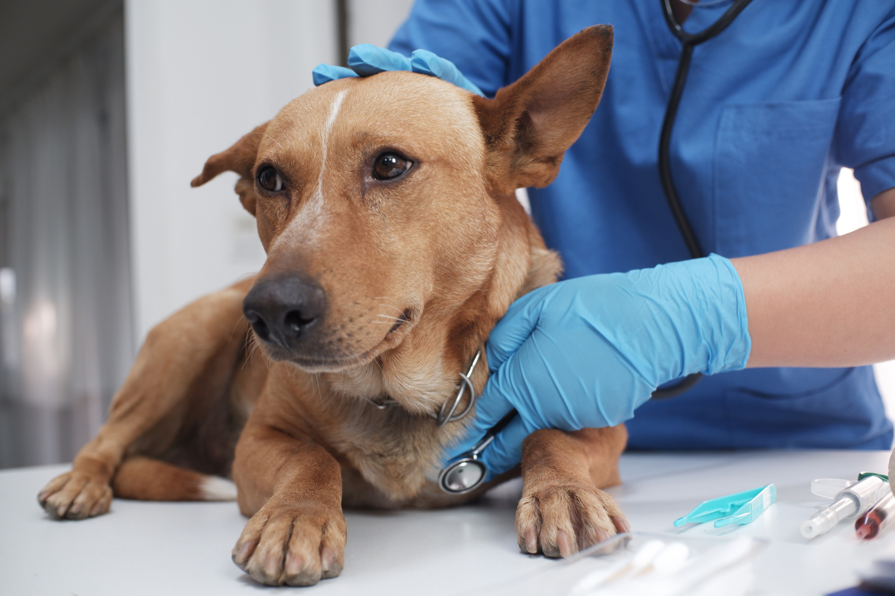
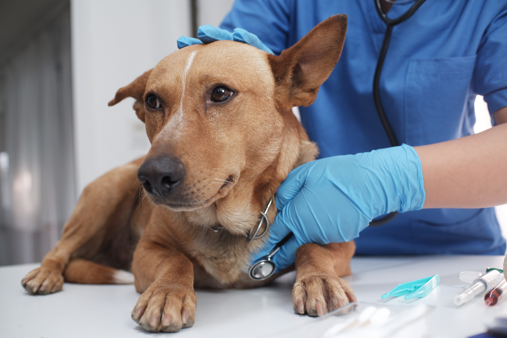
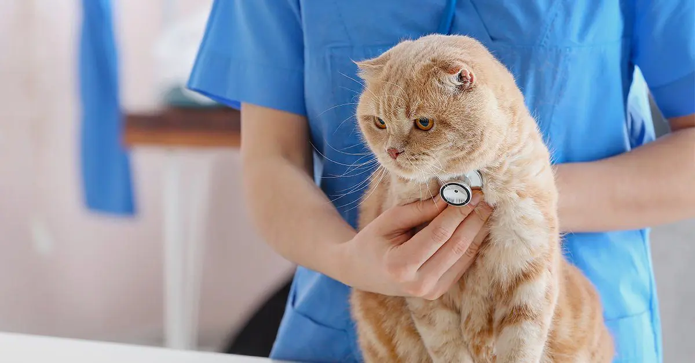
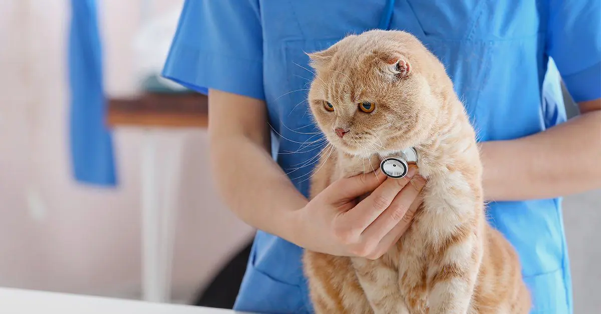

Pet Adoption: Our primary service is pet adoption. We provide a loving and safe environment for dogs and cats, offering them a second chance at a happy, forever home. You can browse through our available pets and adopt the perfect companion for your family.
Foster Program: In addition to adoption, we have a foster program where volunteers provide temporary homes for animals in need. This program helps us rescue and rehabilitate more pets, especially those with special needs or requiring extra care.
Spaying and Neutering: We prioritize the health and wellbeing of our animals. Before adoption, all pets are spayed or neutered to help control the pet population and ensure the long-term health of your new family member.
Vaccinations and Medical Care: We provide essential medical care for our animals, including vaccinations, microchipping, and regular check-ups. Your adopted pet will be up-to-date on their shots and receive the best possible care during their stay with us.
 


 
